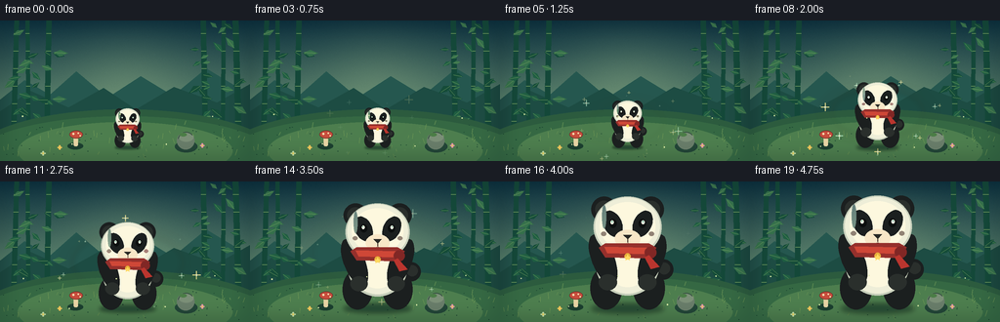
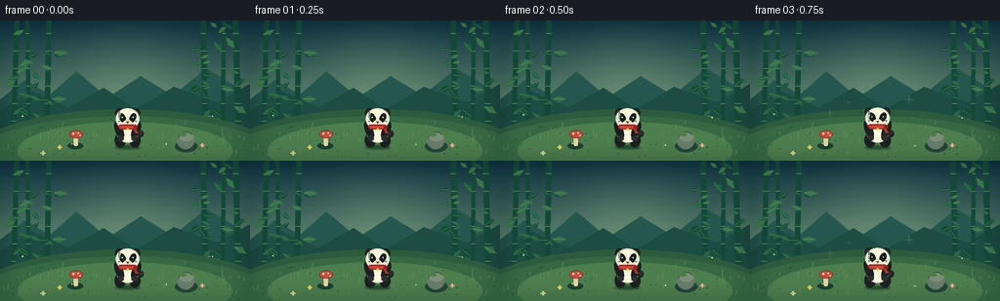

CODING AGENTS AS PIXEL WORLD MODELS
traex/GPT-5.6-Sol · instance_preservation_0045
点击播放 · 原生 RGB 像素
逐轮保存的候选
回放视频、检查图与代码变化。
每份候选均可单独播放。实际图片检查记录在下方工具轨迹中。
候选 01播放与检查图
点击播放 · 原生 RGB 像素


展开代码变化
--- 上一保存版本
+++ 本次保存版本
@@ -0,0 +1,298 @@
+from pathlib import Path
+import math
+import numpy as np
+from PIL import Image, ImageDraw, ImageFilter
+import artifact_io
+
+W, H, N, FPS = 256, 144, 20, 4.0
+SS = 3
+SZ = (W * SS, H * SS)
+CASE_DIR = Path(__file__).resolve().parent
+rng = np.random.default_rng(45)
+
+
+def P(v):
+ return int(round(v * SS))
+
+
+def box(x0, y0, x1, y1):
+ return tuple(P(v) for v in (x0, y0, x1, y1))
+
+
+def ellipse_poly(cx, cy, rx, ry, angle=0.0, steps=48):
+ a = math.radians(angle)
+ ca, sa = math.cos(a), math.sin(a)
+ pts = []
+ for k in range(steps):
+ t = 2 * math.pi * k / steps
+ x, y = rx * math.cos(t), ry * math.sin(t)
+ pts.append((P(cx + x * ca - y * sa), P(cy + x * sa + y * ca)))
+ return pts
+
+
+def line(draw, points, fill, width=1, joint='curve'):
+ draw.line([(P(x), P(y)) for x, y in points], fill=fill, width=max(1, P(width)), joint=joint)
+
+
+def polygon(draw, points, fill):
+ draw.polygon([(P(x), P(y)) for x, y in points], fill=fill)
+
+
+def draw_leaf(draw, x, y, length, angle, color, highlight=None):
+ a = math.radians(angle)
+ vx, vy = math.cos(a), math.sin(a)
+ nx, ny = -vy, vx
+ tip = (x + vx * length, y + vy * length)
+ pts = [
+ (x, y),
+ (x + vx * length * .45 + nx * length * .25, y + vy * length * .45 + ny * length * .25),
+ tip,
+ (x + vx * length * .45 - nx * length * .20, y + vy * length * .45 - ny * length * .20),
+ ]
+ polygon(draw, pts, color)
+ if highlight:
+ line(draw, [(x + vx, y + vy), (x + vx * length * .82, y + vy * length * .82)], highlight, .45)
+
+
+def make_background():
+ hh, ww = H * SS, W * SS
+ yy, xx = np.mgrid[0:hh, 0:ww]
+ y = yy / (hh - 1)
+ top = np.array([12., 48., 62.])
+ bot = np.array([124., 164., 126.])
+ t = np.clip(y[..., None] * 1.15, 0, 1)
+ arr = top * (1 - t) + bot * t
+ # Soft mint-gold clearing in the center, giving the subject a natural halo.
+ rr = ((xx / SS - 131) / 90) ** 2 + ((yy / SS - 71) / 74) ** 2
+ glow = np.exp(-rr * 2.0)[..., None]
+ arr = arr * (1 - .25 * glow) + np.array([170., 199., 148.]) * (.25 * glow)
+ # Subtle fixed grain for a hand-painted feel.
+ noise = rng.normal(0, 1.15, (hh, ww, 1))
+ arr = np.clip(arr + noise, 0, 255).astype(np.uint8)
+ im = Image.fromarray(arr, 'RGB').convert('RGBA')
+ d = ImageDraw.Draw(im, 'RGBA')
+
+ # Misty hills.
+ polygon(d, [(0, 81), (25, 61), (51, 76), (78, 52), (110, 79), (144, 57), (177, 77), (211, 49), (256, 76), (256, 113), (0, 113)], (37, 87, 79, 95))
+ polygon(d, [(0, 93), (31, 72), (70, 89), (106, 69), (139, 91), (178, 68), (222, 84), (256, 65), (256, 114), (0, 114)], (29, 76, 67, 115))
+
+ # Distant trunks.
+ for x, wid, lean in [(14, 5, 3), (29, 4, -1), (48, 5, 2), (210, 5, -2), (228, 4, 1), (244, 6, -3)]:
+ color = (20, 72, 57, 210) if x < 60 or x > 205 else (29, 91, 70, 170)
+ polygon(d, [(x-wid/2, 111), (x+wid/2, 111), (x+lean+wid/2, -2), (x+lean-wid/2, -2)], color)
+ for y0 in range(13, 109, 18):
+ line(d, [(x + lean*(1-y0/111)-wid/2, y0), (x + lean*(1-y0/111)+wid/2, y0)], (112, 154, 94, 140), .7)
+ # Layered bamboo leaves, concentrated on edges to frame the clearing.
+ leaf_data = []
+ for side in [0, 1]:
+ for k in range(24):
+ x = rng.uniform(2, 55) if side == 0 else rng.uniform(202, 254)
+ y0 = rng.uniform(6, 105)
+ length = rng.uniform(8, 16)
+ angle = rng.uniform(-55, 45) if side == 0 else rng.uniform(135, 235)
+ leaf_data.append((x, y0, length, angle, k % 3))
+ for x, y0, length, angle, tone in leaf_data:
+ cols = [(21, 76, 57, 210), (32, 94, 66, 205), (53, 112, 75, 190)]
+ draw_leaf(d, x, y0, length, angle, cols[tone], (124, 165, 100, 90))
+
+ # Ground and curved clearing edge.
+ d.ellipse(box(-30, 91, 286, 190), fill=(44, 91, 62, 255))
+ d.ellipse(box(-30, 98, 286, 190), fill=(53, 104, 67, 255))
+ d.ellipse(box(18, 104, 238, 163), fill=(77, 126, 78, 150))
+ # Ground speckle and grass.
+ for k in range(95):
+ x = float(rng.uniform(0, 256)); y0 = float(rng.uniform(106, 143))
+ if rng.random() < .38:
+ line(d, [(x, y0), (x+rng.uniform(-2,2), y0-rng.uniform(2,6))], (101, 145, 83, 100), .55)
+ else:
+ r = rng.uniform(.25, .65)
+ d.ellipse(box(x-r, y0-r*.5, x+r, y0+r*.5), fill=(27, 70, 50, 80))
+
+ # Fixed props make the size change unmistakable.
+ # Left mushroom.
+ d.ellipse(box(69, 125, 85, 132), fill=(27, 63, 47, 120))
+ d.rounded_rectangle(box(75.5, 116, 79.8, 128.5), radius=P(1.8), fill=(230, 211, 163, 255))
+ d.ellipse(box(71, 112.5, 84.5, 120.5), fill=(199, 77, 61, 255), outline=(113, 44, 38, 220), width=P(.7))
+ for x, y0, r in [(75,116,1),(80,115.3,.8),(82,118,.65)]:
+ d.ellipse(box(x-r,y0-r,x+r,y0+r), fill=(247, 224, 178, 240))
+ # Right stone with moss.
+ d.ellipse(box(179, 123, 202, 135), fill=(35, 70, 56, 130))
+ d.ellipse(box(181, 114, 199, 132), fill=(104, 124, 105, 255))
+ d.ellipse(box(183, 115, 198, 124), fill=(123, 143, 119, 255))
+ d.arc(box(182, 114, 199, 131), 190, 320, fill=(56, 83, 67, 220), width=P(1))
+ d.ellipse(box(184, 115, 191, 118.5), fill=(75, 125, 70, 180))
+ # Tiny flowers.
+ for fx, fy, c in [(61,130,(244,196,91,255)),(207,128,(230,149,174,255)),(44,136,(197,220,163,255))]:
+ line(d, [(fx,fy+3),(fx,fy)], (46,91,56,255), .7)
+ for ang in range(0,360,90):
+ a=math.radians(ang); px=fx+math.cos(a)*1.5; py=fy+math.sin(a)*1.5
+ d.ellipse(box(px-1,py-.7,px+1,py+.7),fill=c)
+ d.ellipse(box(fx-.55,fy-.55,fx+.55,fy+.55), fill=(255,220,91,255))
+
+ # Soft foreground vignette.
+ vig = Image.new('RGBA', SZ, (0,0,0,0))
+ vd = ImageDraw.Draw(vig, 'RGBA')
+ vd.rectangle((0,0,*SZ), outline=(3,28,31,45), width=P(4))
+ vig = vig.filter(ImageFilter.GaussianBlur(P(8)))
+ im.alpha_composite(vig)
+ return im
+
+
+def local_ellipse(draw, cx, cy, sc, coords, fill, outline=None, width=1):
+ x0,y0,x1,y1=coords
+ draw.ellipse(box(cx+x0*sc, cy+y0*sc, cx+x1*sc, cy+y1*sc), fill=fill, outline=outline, width=max(1,P(width*sc)))
+
+
+def local_poly(draw, cx, cy, sc, pts, fill):
+ polygon(draw, [(cx+x*sc,cy+y*sc) for x,y in pts], fill)
+
+
+def draw_panda(im, cx, ground, sc, phase):
+ # Dedicated transparent layer allows a clean, stable silhouette at every scale.
+ layer = Image.new('RGBA', SZ, (0,0,0,0))
+ d = ImageDraw.Draw(layer, 'RGBA')
+
+ # Contact shadow remains attached to the same feet as the animal grows.
+ sh = Image.new('RGBA', SZ, (0,0,0,0)); sd=ImageDraw.Draw(sh,'RGBA')
+ sd.ellipse(box(cx-34*sc, ground-4*sc, cx+34*sc, ground+4*sc), fill=(7,35,31,115))
+ sh=sh.filter(ImageFilter.GaussianBlur(max(1,P(2.4*sc))))
+ im.alpha_composite(sh)
+
+ black=(27,31,31,255); black_hi=(42,47,44,255)
+ white=(238,238,216,255); white_hi=(253,248,222,255); white_sh=(199,207,187,255)
+
+ # Round tail peeks out on the same side throughout.
+ local_ellipse(d,cx,ground,sc,(25,-46,43,-27),black)
+ local_ellipse(d,cx,ground,sc,(29,-43,40,-32),black_hi)
+ # Seated hind legs, body, and belly.
+ local_ellipse(d,cx,ground,sc,(-35,-39,-5,1),black)
+ local_ellipse(d,cx,ground,sc,(5,-39,35,1),black)
+ local_ellipse(d,cx,ground,sc,(-30,-73,30,-12),white_sh)
+ local_ellipse(d,cx,ground,sc,(-28.5,-73,28.5,-14),white)
+ local_ellipse(d,cx,ground,sc,(-20,-62,20,-20),white_hi)
+ # Arms lie symmetrically across the belly; stable pose helps identity continuity.
+ d.polygon(ellipse_poly(cx-23*sc,ground-46*sc,10.5*sc,25*sc,-22),fill=black)
+ d.polygon(ellipse_poly(cx+23*sc,ground-46*sc,10.5*sc,25*sc,22),fill=black)
+ local_ellipse(d,cx,ground,sc,(-27,-32,-10,-17),black_hi)
+ local_ellipse(d,cx,ground,sc,(10,-32,27,-17),black_hi)
+
+ # Ears behind the head, each with a faint cool rim.
+ local_ellipse(d,cx,ground,sc,(-34,-105,-10,-81),black)
+ local_ellipse(d,cx,ground,sc,(10,-105,34,-81),black)
+ local_ellipse(d,cx,ground,sc,(-30.5,-101,-14,-85),black_hi)
+ local_ellipse(d,cx,ground,sc,(14,-101,30.5,-85),black_hi)
+ # Head shadow then warm white face.
+ local_ellipse(d,cx,ground,sc,(-32,-105,32,-48),white_sh)
+ local_ellipse(d,cx,ground,sc,(-30.5,-104,30.5,-50),white)
+ local_ellipse(d,cx,ground,sc,(-26,-100,26,-55),white_hi)
+
+ # Signature eye patches (same tilt and asymmetry in all frames).
+ d.polygon(ellipse_poly(cx-14.1*sc,ground-79.5*sc,8.5*sc,13*sc,-25),fill=black)
+ d.polygon(ellipse_poly(cx+14.1*sc,ground-79.5*sc,8.5*sc,13*sc,25),fill=black)
+ # Eyes and catchlights.
+ local_ellipse(d,cx,ground,sc,(-17.3,-84,-10.2,-75.8),(12,15,15,255))
+ local_ellipse(d,cx,ground,sc,((10.2),-84,17.3,-75.8),(12,15,15,255))
+ # A very subtle happy blink at maximum transformation, without changing identity.
+ blink=max(0.0, 1-abs(phase-.52)/.09)
+ if blink > .35:
+ line(d,[(cx-16*sc,ground-79*sc),(cx-11*sc,ground-78.2*sc)],(235,239,214,255),1.15*sc)
+ line(d,[(cx+11*sc,ground-78.2*sc),(cx+16*sc,ground-79*sc)],(235,239,214,255),1.15*sc)
+ else:
+ local_ellipse(d,cx,ground,sc,(-15.9,-82.8,-13.0,-79.2),(247,250,229,255))
+ local_ellipse(d,cx,ground,sc,((13.0),-82.8,15.9,-79.2),(247,250,229,255))
+ local_ellipse(d,cx,ground,sc,(-15.0,-82.0,-14.0,-81.0),(122,191,167,255))
+ local_ellipse(d,cx,ground,sc,((14.0),-82.0,15.0,-81.0),(122,191,167,255))
+
+ # Cream muzzle, triangular nose, and fixed gentle smile.
+ local_ellipse(d,cx,ground,sc,(-12,-74,12,-57), (248,231,199,255))
+ local_poly(d,cx,ground,sc,[(-4,-69),(4,-69),(0,-65)],(38,39,36,255))
+ line(d,[(cx,ground-65*sc),(cx,ground-62*sc)],(70,54,45,255),.9*sc)
+ # smile curves rendered as short smooth arcs
+ d.arc(box(cx-8*sc,ground-67*sc,cx,ground-58*sc),15,100,fill=(76,55,45,255),width=max(1,P(1*sc)))
+ d.arc(box(cx,ground-67*sc,cx+8*sc,ground-58*sc),80,165,fill=(76,55,45,255),width=max(1,P(1*sc)))
+ local_ellipse(d,cx,ground,sc,(-25,-72,-20,-68),(237,152,142,105))
+ local_ellipse(d,cx,ground,sc,(20,-72,25,-68),(237,152,142,105))
+
+ # Distinctive red scarf: constant accessory, knot always on panda's right.
+ local_poly(d,cx,ground,sc,[(-27,-57),(-21,-48),(20,-47),(27,-57),(20,-61),(-21,-61)],(149,48,44,255))
+ local_poly(d,cx,ground,sc,[(-22,-58),(18,-57),(16,-51),(-19,-52)],(207,71,55,255))
+ local_ellipse(d,cx,ground,sc,(16,-58,27,-47),(129,39,37,255))
+ local_poly(d,cx,ground,sc,[(20,-50),(30,-39),(22,-37),(16,-48)],(186,53,46,255))
+ # Tiny gold charm is preserved as a unique identity marker.
+ local_ellipse(d,cx,ground,sc,(-3,-52,3,-46),(231,174,58,255))
+ local_poly(d,cx,ground,sc,[(0,-51),(1.1,-48.5),(3,-48.5),(1.5,-47),(2.1,-45), (0,-46.2),(-2.1,-45),(-1.5,-47),(-3,-48.5),(-1.1,-48.5)],(255,218,96,255))
+
+ # Gentle directional highlight along left side.
+ local_ellipse(d,cx,ground,sc,(-24,-97,-20,-75),(255,255,240,65))
+ im.alpha_composite(layer)
+
+
+def draw_magic(im, cx, ground, sc, progress, frame):
+ # Energy appears mainly during the size transition and fades at both endpoints.
+ strength = math.sin(math.pi * progress) ** 1.4
+ if strength < .02:
+ return
+ glow=Image.new('RGBA',SZ,(0,0,0,0)); gd=ImageDraw.Draw(glow,'RGBA')
+ radius=(28+48*progress)
+ for j in range(3):
+ r=radius+j*7
+ gd.ellipse(box(cx-r,ground-56*sc-r*.55,cx+r,ground-56*sc+r*.55),outline=(238,221,125,int(62*strength/(j+1))),width=P(1.0))
+ glow=glow.filter(ImageFilter.GaussianBlur(P(2.4)))
+ im.alpha_composite(glow)
+
+ sp=Image.new('RGBA',SZ,(0,0,0,0)); d=ImageDraw.Draw(sp,'RGBA')
+ for k in range(14):
+ ang=2*math.pi*k/14 + frame*.14*(1 if k%2 else -1)
+ rr=(36+35*progress)+(k%4)*5
+ x=cx+math.cos(ang)*rr
+ y=ground-52*sc+math.sin(ang)*rr*.68
+ pulse=.55+.45*math.sin(frame*.75+k*1.7)
+ size=(.9+(k%3)*.45)*pulse
+ alpha=int(220*strength*pulse)
+ col=(255,238,147,alpha) if k%2 else (190,243,207,alpha)
+ line(d,[(x-size*2.4,y),(x+size*2.4,y)],col,max(.5,size*.65))
+ line(d,[(x,y-size*2.4),(x,y+size*2.4)],col,max(.5,size*.65))
+ d.ellipse(box(x-size*.55,y-size*.55,x+size*.55,y+size*.55),fill=(255,255,221,alpha))
+ im.alpha_composite(sp)
+
+
+def make_frames():
+ bg=make_background()
+ frames=[]
+ for i in range(N):
+ # A short hold at either end makes small and big states easy to read.
+ u=np.clip((i-2)/15.0,0,1)
+ ease=u*u*(3-2*u)
+ sc=.38 + .72*ease
+ # Tiny breathing bob; feet remain almost perfectly anchored.
+ bob=math.sin(i*.72)*.45*math.sin(math.pi*u) if 0<u<1 else 0
+ cx=130.5
+ ground=130+bob
+ im=bg.copy()
+ # Aura is behind the panda.
+ draw_magic(im,cx,ground,sc,float(u),i)
+ draw_panda(im,cx,ground,sc,float(u))
+ # A few foreground motes give depth but never obscure the face.
+ fd=ImageDraw.Draw(im,'RGBA')
+ for k in range(5):
+ x=23+k*49+math.sin(i*.25+k)*2
+ y=98+(k%2)*30-math.sin(i*.35+k*.8)*2
+ fd.ellipse(box(x-.55,y-.55,x+.55,y+.55),fill=(221,237,168,90))
+ rgb=im.convert('RGB').resize((W,H),Image.Resampling.LANCZOS)
+ frames.append(np.asarray(rgb,dtype=np.uint8))
+ return np.stack(frames)
+
+
+if __name__ == '__main__':
+ frames=make_frames()
+ artifact_io.save(frames, CASE_DIR)
+ # Also provide a conventional silent MP4 preview when OpenCV supports the codec.
+ try:
+ import cv2
+ out=cv2.VideoWriter(str(CASE_DIR/'video.mp4'),cv2.VideoWriter_fourcc(*'mp4v'),FPS,(W,H))
+ for frame in frames:
+ out.write(cv2.cvtColor(frame,cv2.COLOR_RGB2BGR))
+ out.release()
+ except Exception:
+ pass
+ print(f'saved {len(frames)} RGB frames at {W}x{H}, {FPS:g} fps')
可观测工具轨迹
实际执行的命令与返回图片。
命令 1exit 0
/bin/bash -lc "cat prompt.txt && printf '\\n--- GENERATION_RULES.md ---\\n' && cat GENERATION_RULES.md && printf '\\n--- task_spec.json ---\\n' && cat task_spec.json"
命令 2exit 0
/bin/bash -lc "find . -maxdepth 2 -type f -printf '%p\\n' | sort && printf '\\nTools:\\n' && command -v ffmpeg || true && command -v python3 || true && python3 - <<'PY' mods=['cv2','PIL','numpy','imageio','moviepy','cairo','skia'] for m in mods: try: x=__import__(m); print(m,'OK',getattr(x,'__version__','')) except Exception as e: print(m,'NO') PY"
命令 3exit 0
/bin/bash -lc 'cat artifact_io.py'
命令 4exit 0
/bin/bash -lc "cat > generate.py <<'PY'
from pathlib import Path
import math
import numpy as np
from PIL import Image, ImageDraw, ImageFilter
import artifact_io
W, H, N, FPS = 256, 144, 20, 4.0
SS = 3
SZ = (W * SS, H * SS)
CASE_DIR = Path(__file__).resolve().parent
rng = np.random.default_rng(45)
def P(v):
return int(round(v * SS))
def box(x0, y0, x1, y1):
return tuple(P(v) for v in (x0, y0, x1, y1))
def ellipse_poly(cx, cy, rx, ry, angle=0.0, steps=48):
a = math.radians(angle)
ca, sa = math.cos(a), math.sin(a)
pts = []
for k in range(steps):
t = 2 * math.pi * k / steps
x, y = rx * math.cos(t), ry * math.sin(t)
pts.append((P(cx + x * ca - y * sa), P(cy + x * sa + y * ca)))
return pts
def line(draw, points, fill, width=1, joint='curve'):
draw.line([(P(x), P(y)) for x, y in points], fill=fill, width=max(1, P(width)), joint=joint)
def polygon(draw, points, fill):
draw.polygon([(P(x), P(y)) for x, y in points], fill=fill)
def draw_leaf(draw, x, y, length, angle, color, highlight=None):
a = math.radians(angle)
vx, vy = math.cos(a), math.sin(a)
nx, ny = -vy, vx
tip = (x + vx * length, y + vy * length)
pts = [
(x, y),
(x + vx * length * .45 + nx * length * .25, y + vy * length * .45 + ny * length * .25),
tip,
(x + vx * length * .45 - nx * length * .20, y + vy * length * .45 - ny * length * .20),
]
polygon(draw, pts, color)
if highlight:
line(draw, [(x + vx, y + vy), (x + vx * length * .82, y + vy * length * .82)], highlight, .45)
def make_background():
hh, ww = H * SS, W * SS
yy, xx = np.mgrid[0:hh, 0:ww]
y = yy / (hh - 1)
top = np.array([12., 48., 62.])
bot = np.array([124., 164., 126.])
t = np.clip(y[..., None] * 1.15, 0, 1)
arr = top * (1 - t) + bot * t
# Soft mint-gold clearing in the center, giving the subject a natural halo.
rr = ((xx / SS - 131) / 90) ** 2 + ((yy / SS - 71) / 74) ** 2
glow = np.exp(-rr * 2.0)[..., None]
arr = arr * (1 - .25 * glow) + np.array([170., 199., 148.]) * (.25 * glow)
# Subtle fixed grain for a hand-painted feel.
noise = rng.normal(0, 1.15, (hh, ww, 1))
arr = np.clip(arr + noise, 0, 255).astype(np.uint8)
im = Image.fromarray(arr, 'RGB').convert('RGBA')
d = ImageDraw.Draw(im, 'RGBA')
# Misty hills.
polygon(d, [(0, 81), (25, 61), (51, 76), (78, 52), (110, 79), (144, 57), (177, 77), (211, 49), (256, 76), (256, 113), (0, 113)], (37, 87, 79, 95))
polygon(d, [(0, 93), (31, 72), (70, 89), (106, 69), (139, 91), (178, 68), (222, 84), (256, 65), (256, 114), (0, 114)], (29, 76, 67, 115))
# Distant trunks.
for x, wid, lean in [(14, 5, 3), (29, 4, -1), (48, 5, 2), (210, 5, -2), (228, 4, 1), (244, 6, -3)]:
color = (20, 72, 57, 210) if x < 60 or x > 205 else (29, 91, 70, 170)
polygon(d, [(x-wid/2, 111), (x+wid/2, 111), (x+lean+wid/2, -2), (x+lean-wid/2, -2)], color)
for y0 in range(13, 109, 18):
line(d, [(x + lean*(1-y0/111)-wid/2, y0), (x + lean*(1-y0/111)+wid/2, y0)], (112, 154, 94, 140), .7)
# Layered bamboo leaves, concentrated on edges to frame the clearing.
leaf_data = []
for side in [0, 1]:
for k in range(24):
x = rng.uniform(2, 55) if side == 0 else rng.uniform(202, 254)
y0 = rng.uniform(6, 105)
length = rng.uniform(8, 16)
angle = rng.uniform(-55, 45) if side == 0 else rng.uniform(135, 235)
leaf_data.append((x, y0, length, angle, k % 3))
for x, y0, length, angle, tone in leaf_data:
cols = [(21, 76, 57, 210), (32, 94, 66, 205), (53, 112, 75, 190)]
draw_leaf(d, x, y0, length, angle, cols[tone], (124, 165, 100, 90))
# Ground and curved clearing edge.
d.ellipse(box(-30, 91, 286, 190), fill=(44, 91, 62, 255))
d.ellipse(box(-30, 98, 286, 190), fill=(53, 104, 67, 255))
d.ellipse(box(18, 104, 238, 163), fill=(77, 126, 78, 150))
# Ground speckle and grass.
for k in range(95):
x = float(rng.uniform(0, 256)); y0 = float(rng.uniform(106, 143))
if rng.random() < .38:
line(d, [(x, y0), (x+rng.uniform(-2,2), y0-rng.uniform(2,6))], (101, 145, 83, 100), .55)
else:
r = rng.uniform(.25, .65)
d.ellipse(box(x-r, y0-r*.5, x+r, y0+r*.5), fill=(27, 70, 50, 80))
# Fixed props make the size change unmistakable.
# Left mushroom.
d.ellipse(box(69, 125, 85, 132), fill=(27, 63, 47, 120))
d.rounded_rectangle(box(75.5, 116, 79.8, 128.5), radius=P(1.8), fill=(230, 211, 163, 255))
d.ellipse(box(71, 112.5, 84.5, 120.5), fill=(199, 77, 61, 255), outline=(113, 44, 38, 220), width=P(.7))
for x, y0, r in [(75,116,1),(80,115.3,.8),(82,118,.65)]:
d.ellipse(box(x-r,y0-r,x+r,y0+r), fill=(247, 224, 178, 240))
# Right stone with moss.
d.ellipse(box(179, 123, 202, 135), fill=(35, 70, 56, 130))
d.ellipse(box(181, 114, 199, 132), fill=(104, 124, 105, 255))
d.ellipse(box(183, 115, 198, 124), fill=(123, 143, 119, 255))
d.arc(box(182, 114, 199, 131), 190, 320, fill=(56, 83, 67, 220), width=P(1))
d.ellipse(box(184, 115, 191, 118.5), fill=(75, 125, 70, 180))
# Tiny flowers.
for fx, fy, c in [(61,130,(244,196,91,255)),(207,128,(230,149,174,255)),(44,136,(197,220,163,255))]:
line(d, [(fx,fy+3),(fx,fy)], (46,91,56,255), .7)
for ang in range(0,360,90):
a=math.radians(ang); px=fx+math.cos(a)*1.5; py=fy+math.sin(a)*1.5
d.ellipse(box(px-1,py-.7,px+1,py+.7),fill=c)
d.ellipse(box(fx-.55,fy-.55,fx+.55,fy+.55), fill=(255,220,91,255))
# Soft foreground vignette.
vig = Image.new('RGBA', SZ, (0,0,0,0))
vd = ImageDraw.Draw(vig, 'RGBA')
vd.rectangle((0,0,*SZ), outline=(3,28,31,45), width=P(4))
vig = vig.filter(ImageFilter.GaussianBlur(P(8)))
im.alpha_composite(vig)
return im
def local_ellipse(draw, cx, cy, sc, coords, fill, outline=None, width=1):
x0,y0,x1,y1=coords
draw.ellipse(box(cx+x0*sc, cy+y0*sc, cx+x1*sc, cy+y1*sc), fill=fill, outline=outline, width=max(1,P(width*sc)))
def local_poly(draw, cx, cy, sc, pts, fill):
polygon(draw, [(cx+x*sc,cy+y*sc) for x,y in pts], fill)
def draw_panda(im, cx, ground, sc, phase):
# Dedicated transparent layer allows a clean, stable silhouette at every scale.
layer = Image.new('RGBA', SZ, (0,0,0,0))
d = ImageDraw.Draw(layer, 'RGBA')
# Contact shadow remains attached to the same feet as the animal grows.
sh = Image.new('RGBA', SZ, (0,0,0,0)); sd=ImageDraw.Draw(sh,'RGBA')
sd.ellipse(box(cx-34*sc, ground-4*sc, cx+34*sc, ground+4*sc), fill=(7,35,31,115))
sh=sh.filter(ImageFilter.GaussianBlur(max(1,P(2.4*sc))))
im.alpha_composite(sh)
black=(27,31,31,255); black_hi=(42,47,44,255)
white=(238,238,216,255); white_hi=(253,248,222,255); white_sh=(199,207,187,255)
# Round tail peeks out on the same side throughout.
local_ellipse(d,cx,ground,sc,(25,-46,43,-27),black)
local_ellipse(d,cx,ground,sc,(29,-43,40,-32),black_hi)
# Seated hind legs, body, and belly.
local_ellipse(d,cx,ground,sc,(-35,-39,-5,1),black)
local_ellipse(d,cx,ground,sc,(5,-39,35,1),black)
local_ellipse(d,cx,ground,sc,(-30,-73,30,-12),white_sh)
local_ellipse(d,cx,ground,sc,(-28.5,-73,28.5,-14),white)
local_ellipse(d,cx,ground,sc,(-20,-62,20,-20),white_hi)
# Arms lie symmetrically across the belly; stable pose helps identity continuity.
d.polygon(ellipse_poly(cx-23*sc,ground-46*sc,10.5*sc,25*sc,-22),fill=black)
d.polygon(ellipse_poly(cx+23*sc,ground-46*sc,10.5*sc,25*sc,22),fill=black)
local_ellipse(d,cx,ground,sc,(-27,-32,-10,-17),black_hi)
local_ellipse(d,cx,ground,sc,(10,-32,27,-17),black_hi)
# Ears behind the head, each with a faint cool rim.
local_ellipse(d,cx,ground,sc,(-34,-105,-10,-81),black)
local_ellipse(d,cx,ground,sc,(10,-105,34,-81),black)
local_ellipse(d,cx,ground,sc,(-30.5,-101,-14,-85),black_hi)
local_ellipse(d,cx,ground,sc,(14,-101,30.5,-85),black_hi)
# Head shadow then warm white face.
local_ellipse(d,cx,ground,sc,(-32,-105,32,-48),white_sh)
local_ellipse(d,cx,ground,sc,(-30.5,-104,30.5,-50),white)
local_ellipse(d,cx,ground,sc,(-26,-100,26,-55),white_hi)
# Signature eye patches (same tilt and asymmetry in all frames).
d.polygon(ellipse_poly(cx-14.1*sc,ground-79.5*sc,8.5*sc,13*sc,-25),fill=black)
d.polygon(ellipse_poly(cx+14.1*sc,ground-79.5*sc,8.5*sc,13*sc,25),fill=black)
# Eyes and catchlights.
local_ellipse(d,cx,ground,sc,(-17.3,-84,-10.2,-75.8),(12,15,15,255))
local_ellipse(d,cx,ground,sc,((10.2),-84,17.3,-75.8),(12,15,15,255))
# A very subtle happy blink at maximum transformation, without changing identity.
blink=max(0.0, 1-abs(phase-.52)/.09)
if blink > .35:
line(d,[(cx-16*sc,ground-79*sc),(cx-11*sc,ground-78.2*sc)],(235,239,214,255),1.15*sc)
line(d,[(cx+11*sc,ground-78.2*sc),(cx+16*sc,ground-79*sc)],(235,239,214,255),1.15*sc)
else:
local_ellipse(d,cx,ground,sc,(-15.9,-82.8,-13.0,-79.2),(247,250,229,255))
local_ellipse(d,cx,ground,sc,((13.0),-82.8,15.9,-79.2),(247,250,229,255))
local_ellipse(d,cx,ground,sc,(-15.0,-82.0,-14.0,-81.0),(122,191,167,255))
local_ellipse(d,cx,ground,sc,((14.0),-82.0,15.0,-81.0),(122,191,167,255))
# Cream muzzle, triangular nose, and fixed gentle smile.
local_ellipse(d,cx,ground,sc,(-12,-74,12,-57), (248,231,199,255))
local_poly(d,cx,ground,sc,[(-4,-69),(4,-69),(0,-65)],(38,39,36,255))
line(d,[(cx,ground-65*sc),(cx,ground-62*sc)],(70,54,45,255),.9*sc)
# smile curves rendered as short smooth arcs
d.arc(box(cx-8*sc,ground-67*sc,cx,ground-58*sc),15,100,fill=(76,55,45,255),width=max(1,P(1*sc)))
d.arc(box(cx,ground-67*sc,cx+8*sc,ground-58*sc),80,165,fill=(76,55,45,255),width=max(1,P(1*sc)))
local_ellipse(d,cx,ground,sc,(-25,-72,-20,-68),(237,152,142,105))
local_ellipse(d,cx,ground,sc,(20,-72,25,-68),(237,152,142,105))
# Distinctive red scarf: constant accessory, knot always on panda's right.
local_poly(d,cx,ground,sc,[(-27,-57),(-21,-48),(20,-47),(27,-57),(20,-61),(-21,-61)],(149,48,44,255))
local_poly(d,cx,ground,sc,[(-22,-58),(18,-57),(16,-51),(-19,-52)],(207,71,55,255))
local_ellipse(d,cx,ground,sc,(16,-58,27,-47),(129,39,37,255))
local_poly(d,cx,ground,sc,[(20,-50),(30,-39),(22,-37),(16,-48)],(186,53,46,255))
# Tiny gold charm is preserved as a unique identity marker.
local_ellipse(d,cx,ground,sc,(-3,-52,3,-46),(231,174,58,255))
local_poly(d,cx,ground,sc,[(0,-51),(1.1,-48.5),(3,-48.5),(1.5,-47),(2.1,-45), (0,-46.2),(-2.1,-45),(-1.5,-47),(-3,-48.5),(-1.1,-48.5)],(255,218,96,255))
# Gentle directional highlight along left side.
local_ellipse(d,cx,ground,sc,(-24,-97,-20,-75),(255,255,240,65))
im.alpha_composite(layer)
def draw_magic(im, cx, ground, sc, progress, frame):
# Energy appears mainly during the size transition and fades at both endpoints.
strength = math.sin(math.pi * progress) ** 1.4
if strength < .02:
return
glow=Image.new('RGBA',SZ,(0,0,0,0)); gd=ImageDraw.Draw(glow,'RGBA')
radius=(28+48*progress)
for j in range(3):
r=radius+j*7
gd.ellipse(box(cx-r,ground-56*sc-r*.55,cx+r,ground-56*sc+r*.55),outline=(238,221,125,int(62*strength/(j+1))),width=P(1.0))
glow=glow.filter(ImageFilter.GaussianBlur(P(2.4)))
im.alpha_composite(glow)
sp=Image.new('RGBA',SZ,(0,0,0,0)); d=ImageDraw.Draw(sp,'RGBA')
for k in range(14):
ang=2*math.pi*k/14 + frame*.14*(1 if k%2 else -1)
rr=(36+35*progress)+(k%4)*5
x=cx+math.cos(ang)*rr
y=ground-52*sc+math.sin(ang)*rr*.68
pulse=.55+.45*math.sin(frame*.75+k*1.7)
size=(.9+(k%3)*.45)*pulse
alpha=int(220*strength*pulse)
col=(255,238,147,alpha) if k%2 else (190,243,207,alpha)
line(d,[(x-size*2.4,y),(x+size*2.4,y)],col,max(.5,size*.65))
line(d,[(x,y-size*2.4),(x,y+size*2.4)],col,max(.5,size*.65))
d.ellipse(box(x-size*.55,y-size*.55,x+size*.55,y+size*.55),fill=(255,255,221,alpha))
im.alpha_composite(sp)
def make_frames():
bg=make_background()
frames=[]
for i in range(N):
# A short hold at either end makes small and big states easy to read.
u=np.clip((i-2)/15.0,0,1)
ease=u*u*(3-2*u)
sc=.38 + .72*ease
# Tiny breathing bob; feet remain almost perfectly anchored.
bob=math.sin(i*.72)*.45*math.sin(math.pi*u) if 0<u<1 else 0
cx=130.5
ground=130+bob
im=bg.copy()
# Aura is behind the panda.
draw_magic(im,cx,ground,sc,float(u),i)
draw_panda(im,cx,ground,sc,float(u))
# A few foreground motes give depth but never obscure the face.
fd=ImageDraw.Draw(im,'RGBA')
for k in range(5):
x=23+k*49+math.sin(i*.25+k)*2
y=98+(k%2)*30-math.sin(i*.35+k*.8)*2
fd.ellipse(box(x-.55,y-.55,x+.55,y+.55),fill=(221,237,168,90))
rgb=im.convert('RGB').resize((W,H),Image.Resampling.LANCZOS)
frames.append(np.asarray(rgb,dtype=np.uint8))
return np.stack(frames)
if __name__ == '__main__':
frames=make_frames()
artifact_io.save(frames, CASE_DIR)
# Also provide a conventional silent MP4 preview when OpenCV supports the codec.
try:
import cv2
out=cv2.VideoWriter(str(CASE_DIR/'video.mp4'),cv2.VideoWriter_fourcc(*'mp4v'),FPS,(W,H))
for frame in frames:
out.write(cv2.cvtColor(frame,cv2.COLOR_RGB2BGR))
out.release()
except Exception:
pass
print(f'saved {len(frames)} RGB frames at {W}x{H}, {FPS:g} fps')
PY
python3 generate.py
ls -lh pixels.npz inspection.png transition_check.png index.html video.mp4 frames/00.png frames/19.png"命令 5exit 127
/bin/bash -lc "python3 - <<'PY'
import numpy as np
from PIL import Image
z=np.load('pixels.npz')['pixels']
print('packed tensor:',z.shape,z.dtype)
ims=[]
for i in range(20):
a=np.asarray(Image.open(f'frames/{i:02d}.png'))
ims.append(a)
print('PNG stack:',np.stack(ims).shape,np.stack(ims).dtype)
print('frame mean abs deltas:',[round(float(np.abs(ims[i].astype(int)-ims[i-1].astype(int)).mean()),2) for i in range(1,20)])
print('unique frames:',len({a.tobytes() for a in ims}))
PY
ffprobe -v error -select_streams v:0 -show_entries stream=width,height,avg_frame_rate,nb_frames,pix_fmt,duration -of default=nw=1 video.mp4"命令 6exit 0
/bin/bash -lc 'git status --short 2>/dev/null || true; test -f generate.py && test -f pixels.npz && test -f index.html && test $(find frames -maxdepth 1 -name '"'*.png' | wc -l) -eq 20 && echo 'required artifacts: OK'"
视觉工具实际返回图片 1

保存候选 1 份；完成命令 6 次；可验证图片返回 1 张。原始 API 响应与完整日志保留在本地。